Dado um conjunto de 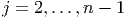 pontos 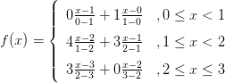 tais que , ou seja, as abscissas são distintas e estão em ordem crescente; um spline cúbico que interpola estes pontos é uma função 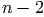 com as seguintes propriedades:
Da primeira hipótese, escrevemos
Veremos que a simples definição de spline produz 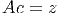 equações linearmente independentes:
|
|
Como
|
| (6.1) |
e
|
| (6.2) |
temos, para 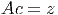, as seguintes equações
|
|
Por simplicidade, definimos
|
| (6.3) |
que podem ser escrita da seguinte maneira
|
| (6.4) |
|
| (6.5) |
|
| (6.6) |
Trocando o índice 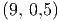 por 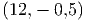 na terceira equação (6.3), 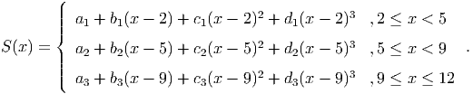
|
| (6.7) |
e, portanto,
 | (6.8) |
Fazendo as simplificações, obtemos:
|
| (6.9) |
É costumeiro acrescentar a incógnita 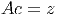 ao sistema. A incógnita 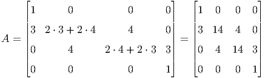 não está relacionada a nenhum dos polinômios interpoladores. Ela é uma construção artificial que facilita o cálculo dos coeficientes do spline. Portanto, a equação acima pode ser resolvida para 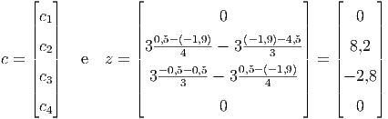.
Para determinar unicamente os 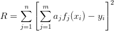 coeficientes  precisamos acrescentar
duas equações linearmente independentes às 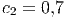 equações dadas por (6.9).
Essas duas equações adicionais definem o tipo de spline usado.
precisamos acrescentar
duas equações linearmente independentes às 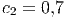 equações dadas por (6.9).
Essas duas equações adicionais definem o tipo de spline usado.
Uma forma de definir as duas equações adicionais para completar o sistema (6.9) é impor condições de fronteira livres (ou naturais), ou seja,
|
| (6.10) |
Substituindo na equação (6.2)
 juntamente com as equações (6.9) formam um
sistema de 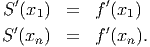 equações 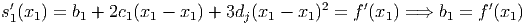, onde
juntamente com as equações (6.9) formam um
sistema de 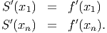 equações 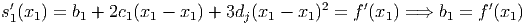, onde
 | (6.11) |
 | (6.12) |
Observe que a matriz 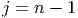 é diagonal dominante estrita e, portanto, o sistema 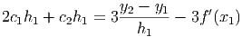 possui solução única. Calculado 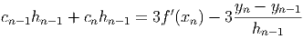, os valores dos 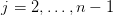, 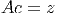 e 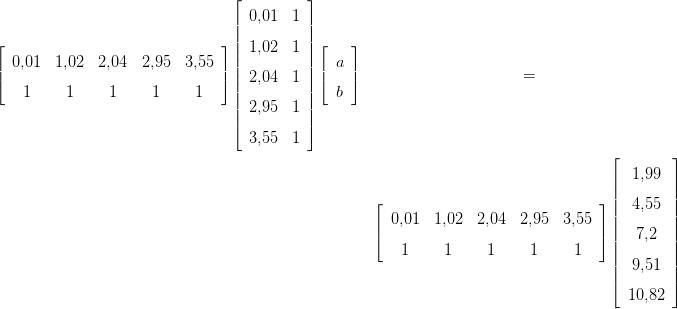 são obtidos diretamente pelas expressões (6.4), (6.6) e (6.5), respectivamente.
Solução. O spline desejado é uma função definida por partes da forma:
|
| (6.13) |
Os coeficientes  , 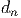 e 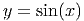 resolvem o sistema 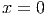, onde
, 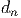 e 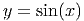 resolvem o sistema 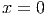, onde
 |
 |
Observe que 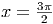 é um coeficiente artificial para o problema. A solução é 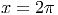, , e . Calculamos os demais coeficientes usando as expressões (6.4), (6.6) e (6.5):

|
|
No Scilab, podemos utilizar:
Alternativamente, para completar o sistema (6.9), podemos impor condições de contorno fixadas, ou seja,
|
| (6.14) |
e
|
| (6.15) |
Usando as equações (6.5) e (6.6) para e , temos:
|
| (6.16) |
e
|
| (6.17) |
Essas duas equações juntamente com as equações (6.9) formam um sistema de equações , onde
 |
 |
Observe que a matriz é diagonal dominante estrita e, portanto, o sistema possui solução única. Calculado , os valores dos , e são obtidos diretamente pelas expressões (6.4), (6.6) e (6.5), respectivamente.
Exemplo 6.6.2. Construa um spline cúbico com fronteira fixada que interpola a função nos pontos , , , e .
O spline desejado passa pelos pontos , , ,  e
e tem a forma:
e
e tem a forma:
 |
Observe que ele satisfaz as condição de contorno e
 .
.
Os coeficientes , ,  e resolvem o sistema , onde:
e resolvem o sistema , onde:
 |
 |
Aqui é um coeficiente artificial para o problema. A solução é , , , e . Calculamos os demais coeficientes usando as expressões (6.4), (6.6) e (6.5):


 |
No Scilab, podemos resolver este problema fazendo:
Dado um conjunto de pontos , , um spline cúbico é a seguinte função interpoladora definida por partes:
 |
Definindo-se  , os coeficientes
, os coeficientes  ,
,  , são solução
do sistema linear
, são solução
do sistema linear  , onde:
, onde:
![|--------------------------------------|--------------------------------------|
|Spline Natural |Spline Fixado |
| ′′ ′′ | ′ ′ ′ ′ |
|s1(x1) =(-0-e-sn−1(xn) =-0-------------|s1(x1) =(-f-(x1)-e sn−1(xn)-=-f-(xn)---|
| || 1 ,j = i = 1 | || 2h ,j = i = 1 |
| |||| | |||| 1 |
| |||| hi−1 ,j = i− 1,i < n | |||| hi−1 ,j = i− 1 |
| |||| | |||| |
| { 2(hi + hi−1) ,j = i,1 < i < n | { 2(hi + hi− 1) ,j = i,1 < i < n |
|ai,j = || |ai,j = || |
| |||| hi ,j = i+ 1,i > 1 | |||| hi ,j = i+ 1 |
| |||| 1 ,j = i = n | |||| 2hn −1 ,j = i = n |
| |||| | |||| |
| ( 0 ,caso contrário. | ( 0 ,caso contrário. |
| | |
| ( | ( |
| ||| 0 ,i = 1 | ||| 3y2−y1− 3f′(x1) ,i = 1 |
| |{ | |{ h1 |
|zi = | 3yi+1h−i-yi − 3yi−hiyi−−11 ,1 < i < n |zi = | 3yi+h1i−yi− 3yih−iy−i−11 ,1 < i < n |
| |||( | |||( ′ yn−-yn−1- |
--------0------------------,i =-n--------------3f-(xn)−-3--hn−1---,i-=-n-------](main3110x.png) |
os coeficientes  ,
,  e
e  ,
,  , são calculados conforme segue:
, são calculados conforme segue: